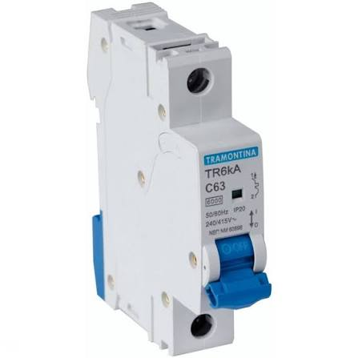
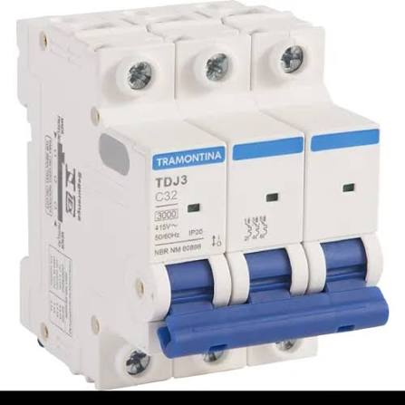
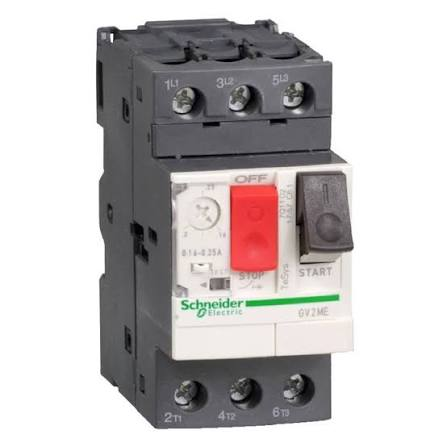
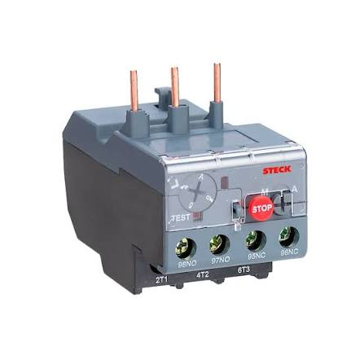

Dispositivos de Proteção Elétrica
Os dispositivos de proteção são projetados para interromper circuitos automaticamente sob condições anômalas, protegendo a integridade física dos condutores, das máquinas e, principalmente, dos operadores.
Disjuntor
Conceito: O disjuntor é um dispositivo eletromecânico de proteção que atua como um interruptor automático. Ele monitora a corrente do circuito e abre os contatos de forma autônoma quando detecta duas anomalias: sobrecargas e curtos-circuitos.
Aplicação: Proteção do cabeamento elétrico em instalações residenciais, comerciais e industriais, evitando superaquecimentos que podem causar incêndios.


Disjuntor Motor
Conceito: É um dispositivo de proteção robusto e unificado, desenvolvido especificamente para motores elétricos. Ele junta em um só corpo a proteção magnética contra curtos-circuitos e a proteção térmica ajustável contra sobrecarga.
Aplicação: Proteção dedicada e manobra direta de motores elétricos de pequeno e médio porte, otimizando o espaço interno de painéis industriais.

Relé Térmico (ou de Sobrecarga)
Conceito: É um componente que protege exclusivamente o motor contra aquecimentos perigosos causados por sobrecargas mecânicas prolongadas ou falta de fase.
Aplicação: Acoplado diretamente na saída dos contatores de potência para proteger os enrolamentos de motores elétricos contra queima.
